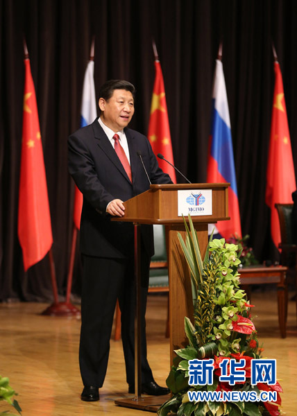
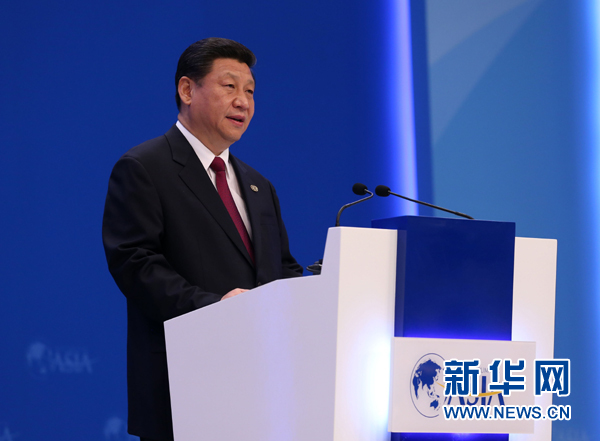

“中国梦”基本内涵和奋斗目标是什么
来源： 新华网 日期：2013-04-12

3月23日，国家主席习近平在莫斯科国际关系学院发表演讲。新华社记者 丁林 摄
基本内涵
实现中华民族伟大复兴，是近代以来中国人民最伟大的梦想，我们称之为“中国梦”，基本内涵是实现国家富强、民族振兴、人民幸福。
——习近平在莫斯科国际关系学院演讲
4月7日，国家主席习近平在海南博鳌出席博鳌亚洲论坛2013年年会开幕式并发表主旨演讲。 新华社记者庞兴雷摄
奋斗目标
我们的奋斗目标是，到２０２０年国内生产总值和城乡居民人均收入在２０１０年的基础上翻一番，全面建成小康社会；到本世纪中叶建成富强民主文明和谐的社会主义现代化国家，实现中华民族伟大复兴的中国梦。